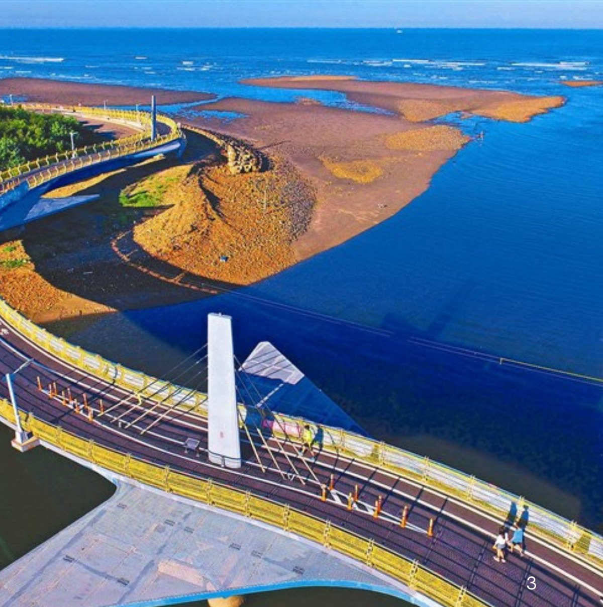

海岸線：讓視野打開
濕地、沙丘、燈塔、漁港、綠色走廊——在風與光之間慢慢推進。海風會把腦中的雜訊吹走，午餐用一頓現撈海鮮把味覺打開。
無論是海風的輕撫，還是山林的靜謐，都是讓你暫時離開課業與工作的方式。「桃花遊記」把這兩種空氣，整理成一天就可以完成的小旅行。
桃園不一定要遠行才有風景。從中原大學出發，一天之內就能換到一整片海岸線，或一整座山的安靜。
桃園海岸與山線都不需要走很遠，從中原大學出發各自只需 35–60 分鐘車程。它們不像熱門城市那樣需要排滿打卡清單，卻能在短距離內看見截然不同的風景。
這趟旅行的主角不是單一景點，而是一路上不斷變化的空氣。

同樣是約 9 小時，海岸線給你的是視野，山線給你的是溫度。沒有對錯，只有今天的心情。
濕地、沙丘、燈塔、漁港、綠色走廊——在風與光之間慢慢推進。海風會把腦中的雜訊吹走，午餐用一頓現撈海鮮把味覺打開。
三坑自然生態公園、大平紅橋、角板山公園、八德埤塘——在綠蔭與水面之間呼吸。客家午餐與牛汶水點心，把山線的溫度收進記憶裡。
想用一天換個風景，不想做太複雜功課，也希望照片有自然感的朋友。從中原大學集合，特別適合校內同學一起加入。
喜歡散步、看海、吹風、騎車，比起室內行程更想把時間留給戶外的人。兩條路線都安排了大量自然空間。
在課業、工作或日常壓力之間，想安排短時間充電。不需要請假，週末來回就能完成的旅行。
沒有複雜的裝備清單，但海邊與山區的天氣需要一點預備。出發前 5 分鐘確認一下就足夠。
多數景點屬於戶外環境，遮蔽物較少，建議帽子、墨鏡、防曬乳都要準備。
建議攜帶足夠飲水與輕便補給，夏天中午安排短暫休息更舒服。
海邊風勢與山區溫度都不可預測，建議攜帶輕便雨具與薄外套備用。
不必追求每站都停很久。讓海邊或山林景點打開視野，讓午餐與甜點補上生活感，整天就會剛剛好。
每個停留時間都已經幫你算好了——只要準時，行程就會自然展開。